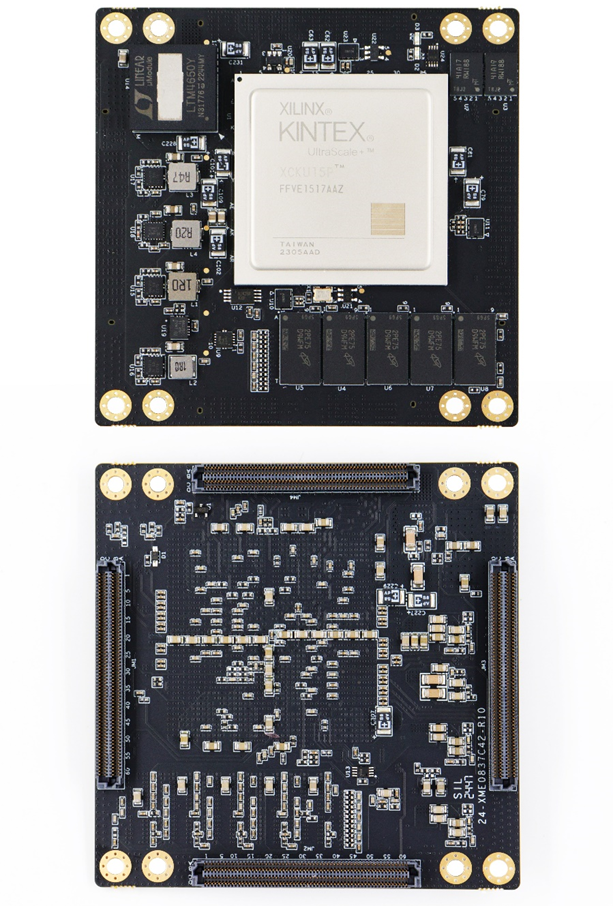
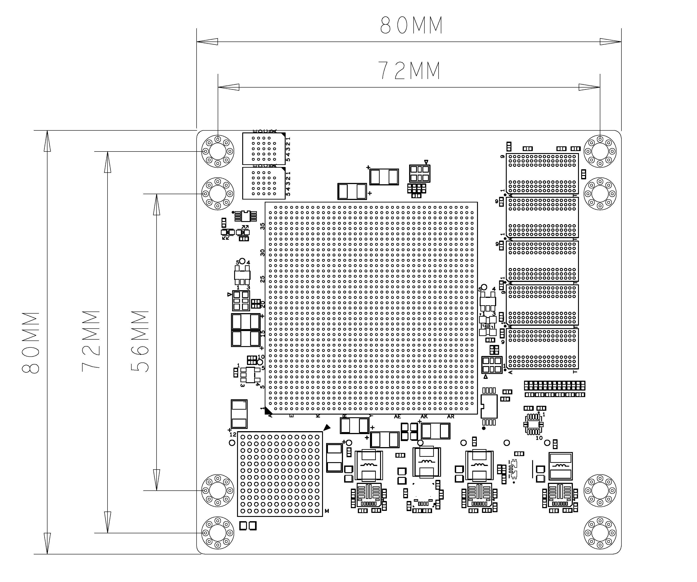
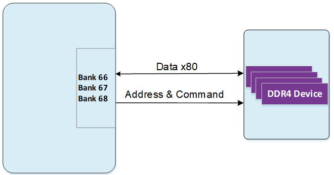

XME0837 User Manual
Development Environment:
Xilinx Vivado 2021.1
WeChat Official Account:

●1. Overview
XME0837 is an industrial-grade system module developed by MicroPhase based on the Xilinx Kintex UltraScale+ SoC. It can be customized according to requirements, and customization may require meeting a minimum order quantity. Please contact our sales team for more information: sales@microphase.cn.
The module integrates 5 pieces of 1GB DDR4, forming an 80-bit data bus with a capacity of 5GB. The data read/write clock frequency between the PS (Processing System) and DDR3 can reach up to 533MHz, with a maximum operating clock speed of 1333MHz (data rate of 2666Mbps), meeting the system’s demand for high-bandwidth data processing. At the same time, the core board integrates 2 pieces of 128MB QSPI FLASH, which can be used as a large-capacity storage device for the system.
The core board extends 322 single-ended IOs (configurable as 161 pairs of differential IOs); including 96 HD IOs, configurable as 48 pairs of differential IOs, with adjustable voltage; 226 HP IOs, configurable as 113 pairs of differential IOs, with 95 pairs having adjustable voltage and 18 pairs fixed at 1.8V; it also provides 24 pairs of GTY high-speed RX/TX differential signals and 12 pairs of GTH high-speed RX/TX differential signals. The FPGA pins to the connector traces are designed with equal-length differential processing, with single-ended impedance of 50 ohms and differential impedance of 100 ohms.
○Board Layout

○Resource Features
FPGA: Xilinx XCKU15P- 2FFVB1517I
DDR4: 5GB DDR4 RAM, 80Bit
Clock: 1 100MHz system single-ended clock
3 200MHz system differential clocksFlash: 2 128MB QSPI Flash
LED: 1 Power LED, 1 FPGA Done LED
Transceivers: GTY: 24; GTH: 12
GPIO: HD IO: 96, 48 pairs of LVDS, voltage adjustable
HP IO: 226, 113 pairs of LVDS, 95 pairs with adjustable voltage, 18 pairs at 1.8VConnectors: 4 x 240pin high-speed B2B connectors
○Mechanical Dimensions

●2. Functional Resources
○FPGA
Logic Cells: 1,143K;
Look-Up Tables (LUTs): 523K
Flip-Flops: 1,045K
Block RAM: 34.6Mb;
UltraRAM: 36.0Mb;
DSP Slices: 1,968
○DDR4
The XME0837 board is equipped with five pieces of Micron DDR4, each 1GB, forming a data width of 80 bits, using DDR4 model: MT40A512M16LY-062E. The DDR4 SDRAM can operate at a maximum clock speed of 1333MHz (data rate of 2666Mbps). The DDR4 chips are connected to the BANK66, 67, and 68 memory interfaces.
The hardware design of DDR4 requires strict consideration of signal integrity. We have fully considered matching resistors/termination resistors, impedance control, and trace length control in the circuit and PCB design to ensure the high-speed and stable operation of DDR4.
The connection diagram between ZYNQ Bank66, 67, 68 and DDR4 is shown below:

The connection allocation table between DDR4 and FPGA is as follows:
| Signal Name | Pin Number | Signal Name | Pin Number |
|---|---|---|---|
| DDR4_C1_D0 | AW25 | DDR4_C1_D71 | AN33 |
| DDR4_C1_D1 | AW26 | DDR4_C1_D72 | AJ29 |
| DDR4_C1_D2 | AU23 | DDR4_C1_D73 | AJ30 |
| DDR4_C1_D3 | AV23 | DDR4_C1_D74 | AH31 |
| DDR4_C1_D4 | AT24 | DDR4_C1_D75 | AH32 |
| DDR4_C1_D5 | AU24 | DDR4_C1_D76 | AK32 |
| DDR4_C1_D6 | AV26 | DDR4_C1_D77 | AL32 |
| DDR4_C1_D7 | AV27 | DDR4_C1_D78 | AM32 |
| DDR4_C1_D8 | AT25 | DDR4_C1_D79 | AM33 |
| DDR4_C1_D9 | AT26 | DDR4_C1_DM0 | AW23 |
| DDR4_C1_D10 | AN23 | DDR4_C1_DM1 | AR23 |
| DDR4_C1_D11 | AP23 | DDR4_C1_DM2 | AM23 |
| DDR4_C1_D12 | AP24 | DDR4_C1_DM3 | AL25 |
| DDR4_C1_D13 | AP25 | DDR4_C1_DM4 | AU28 |
| DDR4_C1_D14 | AN25 | DDR4_C1_DM5 | AV35 |
| DDR4_C1_D15 | AP26 | DDR4_C1_DM6 | AR34 |
| DDR4_C1_D16 | AL24 | DDR4_C1_DM7 | AR37 |
| DDR4_C1_D17 | AM25 | DDR4_C1_DM8 | AM28 |
| DDR4_C1_D18 | AK22 | DDR4_C1_DM9 | AH30 |
| DDR4_C1_D19 | AK23 | DDR4_C1_DQS_N0 | AV25 |
| DDR4_C1_D20 | AH23 | DDR4_C1_DQS_N1 | AR27 |
| DDR4_C1_D21 | AJ23 | DDR4_C1_DQS_P0 | AU25 |
| DDR4_C1_D22 | AJ24 | DDR4_C1_DQS_P1 | AR26 |
| DDR4_C1_D23 | AK24 | DDR4_C1_DQS2_N | AJ25 |
| DDR4_C1_D24 | AJ28 | DDR4_C1_DQS2_P | AH25 |
| DDR4_C1_D25 | AK28 | DDR4_C1_DQS3_N | AH27 |
| DDR4_C1_D26 | AJ26 | DDR4_C1_DQS3_P | AH26 |
| DDR4_C1_D27 | AK26 | DDR4_C1_DQS4_N | AW30 |
| DDR4_C1_D28 | AN26 | DDR4_C1_DQS4_P | AV30 |
| DDR4_C1_D29 | AN27 | DDR4_C1_DQS5_N | AV33 |
| DDR4_C1_D30 | AK27 | DDR4_C1_DQS5_P | AV32 |
| DDR4_C1_D31 | AL27 | DDR4_C1_DQS6_N | AP35 |
| DDR4_C1_D32 | AT30 | DDR4_C1_DQS6_P | AP34 |
| DDR4_C1_D33 | AU30 | DDR4_C1_DQS7_N | AV38 |
| DDR4_C1_D34 | AW28 | DDR4_C1_DQS7_P | AU38 |
| DDR4_C1_D35 | AW29 | DDR4_C1_DQS8_N | AN31 |
| DDR4_C1_D36 | AT29 | DDR4_C1_DQS8_P | AN30 |
| DDR4_C1_D37 | AU29 | DDR4_C1_DQS9_N | AL31 |
| DDR4_C1_D38 | AV31 | DDR4_C1_DQS9_P | AK31 |
| DDR4_C1_D39 | AW31 | DDR4_C1_ODT | AJ31 |
| DDR4_C1_D40 | AW34 | DDR4_C1_PAR | AN28 |
| DDR4_C1_D41 | AW35 | DDR4_C1_A16_NRAS | AL35 |
| DDR4_C1_D42 | AT35 | DDR4_C1_NRST | AV28 |
| DDR4_C1_D43 | AT36 | DDR4_C1_A14_NWE | AM35 |
| DDR4_C1_D44 | AU32 | DDR4_C1_A0 | AK36 |
| DDR4_C1_D45 | AU33 | DDR4_C1_A1 | AK39 |
| DDR4_C1_D46 | AU34 | DDR4_C1_A2 | AJ39 |
| DDR4_C1_D47 | AU35 | DDR4_C1_A3 | AL37 |
| DDR4_C1_D48 | AR32 | DDR4_C1_A4 | AL36 |
| DDR4_C1_D49 | AT32 | DDR4_C1_A5 | AK38 |
| DDR4_C1_D50 | AR31 | DDR4_C1_A6 | AK37 |
| DDR4_C1_D51 | AT31 | DDR4_C1_A7 | AN38 |
| DDR4_C1_D52 | AP33 | DDR4_C1_A8 | AM38 |
| DDR4_C1_D53 | AR33 | DDR4_C1_A9 | AM39 |
| DDR4_C1_D54 | AP36 | DDR4_C1_A10 | AL39 |
| DDR4_C1_D55 | AR36 | DDR4_C1_A11 | AN37 |
| DDR4_C1_D56 | AU37 | DDR4_C1_A12 | AM37 |
| DDR4_C1_D57 | AV37 | DDR4_C1_A13 | AH34 |
| DDR4_C1_D58 | AR38 | DDR4_C1_NACT | AM34 |
| DDR4_C1_D59 | AR39 | DDR4_C1_NALERT | AW24 |
| DDR4_C1_D60 | AP38 | DDR4_C1_BA0 | AH33 |
| DDR4_C1_D61 | AP39 | DDR4_C1_BA1 | AK35 |
| DDR4_C1_D62 | AT39 | DDR4_C1_BG0 | AJ34 |
| DDR4_C1_D63 | AU39 | DDR4_C1_A15_NCAS | AJ33 |
| DDR4_C1_D64 | AL30 | DDR4_C1_CKE | AK29 |
| DDR4_C1_D65 | AM30 | DDR4_C1_CKN | AN36 |
| DDR4_C1_D66 | AP28 | DDR4_C1_CKP | AN35 |
| DDR4_C1_D67 | AP29 | 200M_CLK1_N | AK34 |
| DDR4_C1_D68 | AL29 | 200M_CLK1_P | AK33 |
| DDR4_C1_D69 | AM29 | DDR4_C1_NCS | AL34 |
| DDR4_C1_D70 | AN32 |
○JTAG
The JTAG signal chain of XME0837 is connected to the expansion connector.
| Signal | JM1 Pin Number | Description |
|---|---|---|
| FPGA_TCK | A4 | Input (1.8V) |
| FPGA_TDI | A3 | Input (1.8V) |
| FPGA_TDO | A2 | Output (1.8V) |
| FPGA_TMS | A1 | Output (1.8V) |
○Boot Configuration
The boot mode of XME0837 is MASTER SPI.
The boot configuration schematic of XME0837 is shown below:

○Quad-SPI Flash
The board is equipped with 2 pieces of 128MB QSPI Flash for storing the initial FPGA configuration and user applications and data.

| Location | Model | Capacity | Manufacturer |
|---|---|---|---|
| U2 | MT25QU01GBBB8E12-0SIT | 256MB | Winbond |
| U3 | MT25QU01GBBB8E12-0SIT | 256MB | Winbond |
QSPI to FPGA pin connection allocation table
| Signal Name | FPGA Pin | Pin Name |
|---|---|---|
| QSPI_CLK | AD23 | CCLK_0 |
| QSPI0_CS_B | AG22 | RDWR_FCS_B_0 |
| QSPI0_DQ0 | AD25 | D00_MOSI_0 |
| QSPI0_DQ1 | AD26 | D01_DIN_0 |
| QSPI0_DQ2 | AE22 | D02_0 |
| QSPI0_DQ3 | AE23 | D03_0 |
| QSPI1_CS_B | AV11 | IO_L2N_T0L_N3_FWE_FCS2_B_65 |
| QSPI1_DQ0 | AM12 | IO_L22P_T3U_N6_DBC_AD0P_D04_65 |
| QSPI1_DQ1 | AN12 | IO_L22N_T3U_N7_DBC_AD0N_D05_65 |
| QSPI1_DQ2 | AR13 | IO_L21P_T3L_N4_AD8P_D06_65 |
| QSPI1_DQ3 | AR12 | IO_L21N_T3L_N5_AD8N_D07_65 |
○Clock
The XME0837 core board provides 1 single-ended 100MHz clock and 3 differential 200MHz clocks.
The XME0837 core board provides 1 single-ended 100MHz clock, which is connected to the AM14 pin of BANK65.
The clock input allocation is as follows:
| Signal Name | FPGA Pin Name | Pin Number |
|---|---|---|
| EMCCLK | IO_L24P_T3U_N10_EMCCLK_65 | AM14 |
The XME0837 core board provides 3 differential 200MHz clocks for the FPGA logic and DDR4 controller reference clocks. The three clocks are connected to the global clocks of BANK65, 68, and 71.
The 200MHz clock input allocation is as follows:
| Signal Name | FPGA Pin Number | Description |
|---|---|---|
| 200M_CLK0_P | AL15 | Differential signal positive |
| 200M_CLK0_N | AL14 | Differential signal negative |
| 200M_CLK1_P | AK33 | Differential signal positive |
| 200M_CLK1_N | AK34 | Differential signal negative |
| 200M_CLK2_P | F19 | Differential signal positive |
| 200M_CLK2_N | F18 | Differential signal negative |
○Power Supply
Supports wide power input (5V~15V), recommended design uses +12V power input.
○LED
The XME0837 core board has two LEDs. One is a power indicator, which is red. The other is a configuration LED, which is green. When the core board is powered on, D1 and D2 will light up, and D2 will turn off when the board configuration is complete.
○Expansion Ports
The XME0837 uses four high-speed connectors to extend the FPGA signals.
4 x ADF6-60-03.5-L-4-2-FR, 168Pin, 0.64mm pitch
| Core Board Connector Model | Base Board Connector Model | Manufacturer | Height |
|---|---|---|---|
| ADF6-60-03.5-L-4-2-FR | ADM6-60-01.5-L-4-2-A-FR | SAMTEC | 5mm |
FPGA Bank, IO count, and B2B connector relationship table
| FPGA Bank | B2B Connector | IO Count | Voltage | Description |
|---|---|---|---|---|
| Bank64 | JM1 | 48 | Adjustable | 48 single-ended, configurable as 24 differential pairs |
| Bank132 | JM1 | 18 | - | 1 CLK pair, 4 TX and RX pairs |
| Bank131 | JM1 | 18 | - | 1 CLK pair, 4 TX and RX pairs |
| Bank130 | JM1 | 18 | - | 1 CLK pair, 4 TX and RX pairs |
| Bank129 | JM1 | 18 | - | 1 CLK pair, 4 TX and RX pairs |
| Bank128 | JM1 | 18 | - | 1 CLK pair, 4 TX and RX pairs |
| Bank127 | JM1 | 18 | - | 1 CLK pair, 4 TX and RX pairs |
| Bank65 | JM2 | 36 | 1.8V | 36 single-ended, configurable as 18 differential pairs |
| Bank231 | JM2 | 18 | - | 1 CLK pair, 4 TX and RX pairs |
| Bank230 | JM2 | 18 | - | 1 CLK pair, 4 TX and RX pairs |
| Bank229 | JM2 | 18 | - | 1 CLK pair, 4 TX and RX pairs |
| Bank90 | JM3 | 24 | Adjustable | 36 single-ended, configurable as 18 differential pairs |
| Bank91 | JM3 | 24 | Adjustable | 36 single-ended, configurable as 18 differential pairs |
| Bank228 | JM3 | 18 | - | 1 CLK pair, 4 TX and RX pairs |
| Bank227 | JM3 | 18 | - | 1 CLK pair, 4 TX and RX pairs |
| Bank226 | JM3 | 18 | - | 1 CLK pair, 4 TX and RX pairs |
| Bank225 | JM3 | 18 | - | 1 CLK pair, 4 TX and RX pairs |
| Bank224 | JM3 | 18 | - | 1 CLK pair, 4 TX and RX pairs |
| Bank69 | JM4 | 48 | Adjustable | 36 single-ended, configurable as 18 differential pairs |
| Bank70 | JM4 | 48 | Adjustable | 36 single-ended, configurable as 18 differential pairs |
| Bank71 | JM4 | 46 | Adjustable | 36 single-ended, configurable as 18 differential pairs |
| Bank93 | JM4 | 48 | Adjustable | 36 single-ended, configurable as 18 differential pairs |
Notes:
Bank64 IO level depends on JM1 A50 voltage input, input range 1.0-1.8V
Bank65 IO, JTAG(JM1 A1-A4) level is 1.8V
Bank90, 91 IO level depends on JM3 A10 voltage input, input range 1.2-3.3V
Bank69 level depends on JM4 A10 voltage input, input range 1.0-1.8V
Bank70 level depends on JM4 A20 voltage input, input range 1.0-1.8V
Bank71 level depends on JM4 A40 voltage input, input range 1.0-1.8V
Bank93, 94 level depends on JM4 A50 voltage input, input range 1.2-3.3V
For detailed pin definitions of XME0837, please refer to the ‘XME0837_Pinout Table ‘ document.